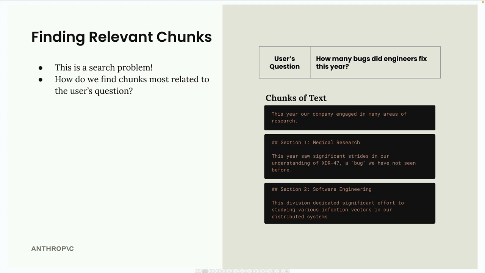
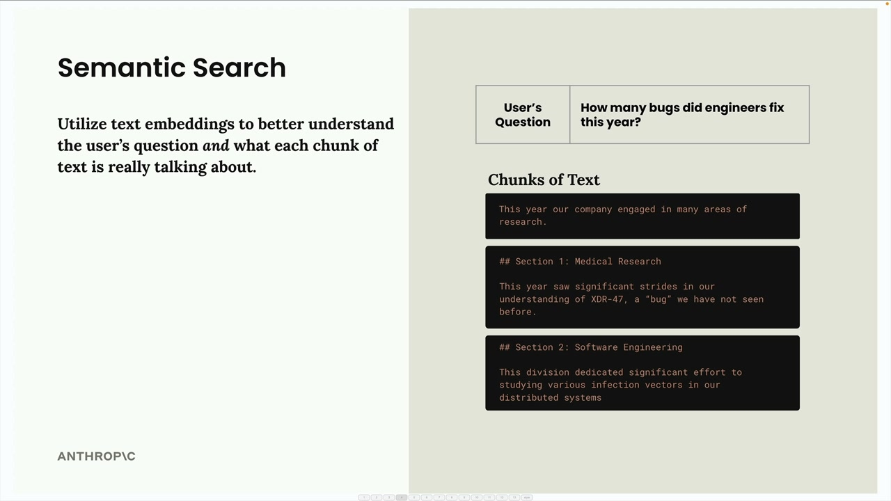
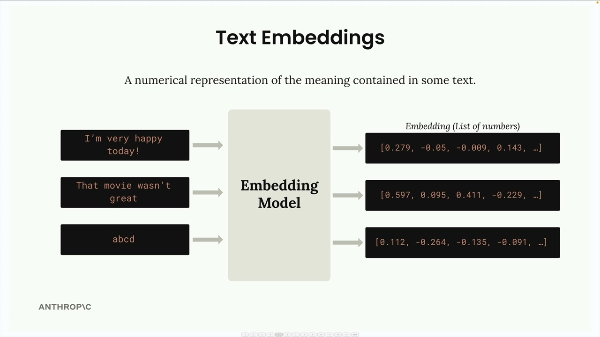
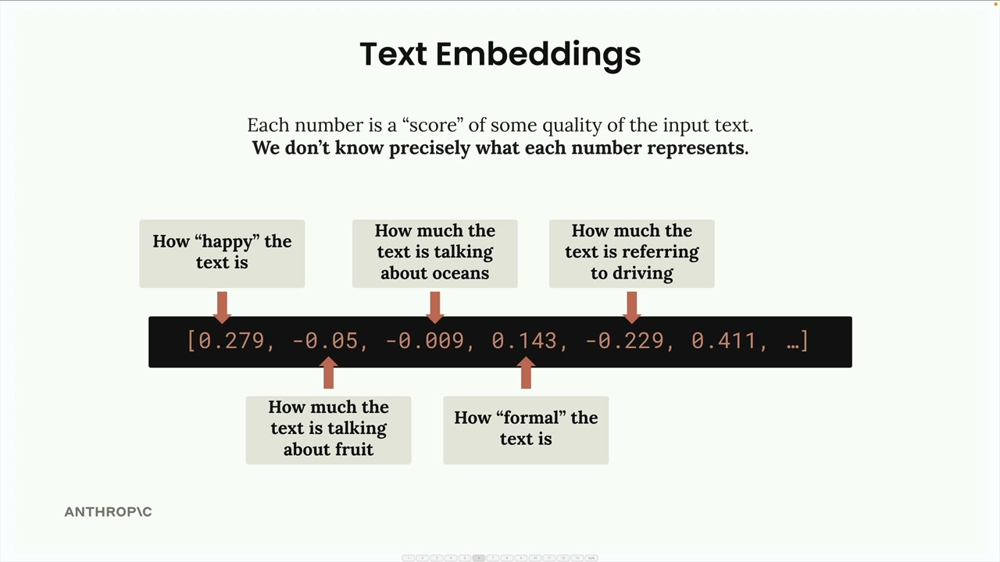
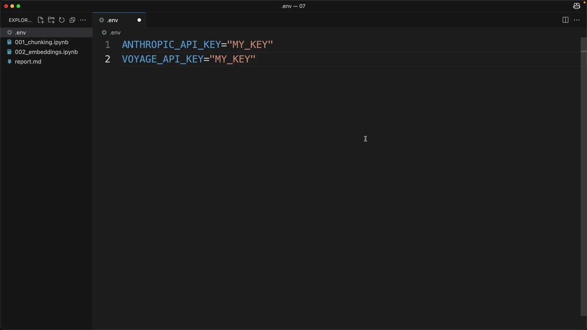
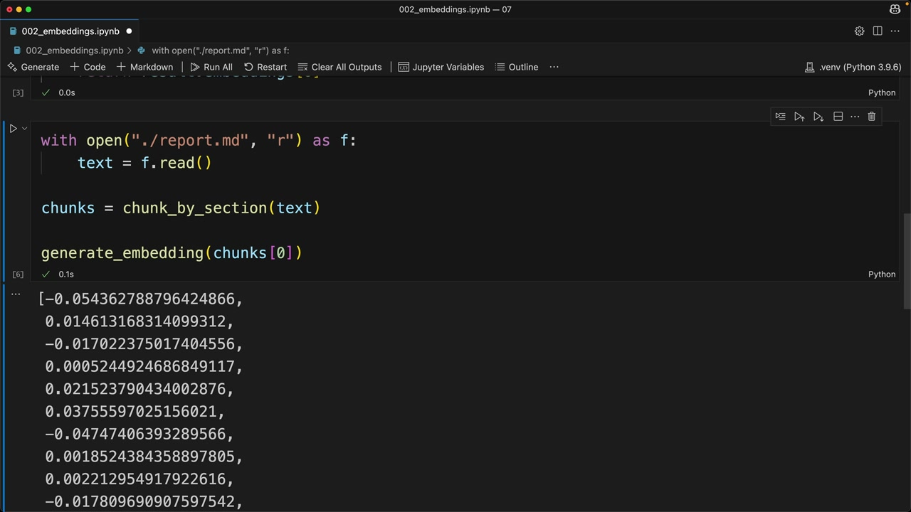
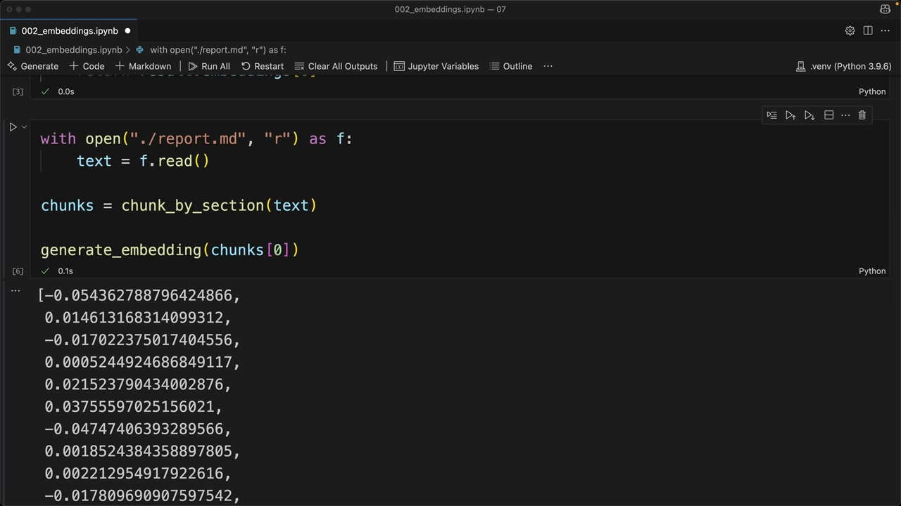

텍스트 임베딩
문서를 청크로 분할한 후, RAG 파이프라인의 다음 단계는 사용자의 질문과 가장 관련성 높은 청크를 찾는 것입니다. 이는 본질적으로 검색 문제입니다. 즉, 모든 텍스트 청크를 살펴보고 사용자가 묻는 내용과 관련된 청크를 식별해야 합니다.

시맨틱 검색
관련 청크를 찾는 가장 일반적인 방법은 시맨틱 검색입니다. 정확한 단어 일치를 찾는 키워드 기반 검색과 달리, 시맨틱 검색은 텍스트 임베딩을 사용하여 사용자의 질문과 각 텍스트 청크의 의미와 맥락을 이해합니다.

텍스트 임베딩
텍스트 임베딩은 텍스트에 담긴 의미를 수치로 표현한 것입니다. 단어와 문장을 컴퓨터가 수학적으로 처리할 수 있는 형식으로 변환하는 것이라고 생각하면 됩니다.

프로세스는 다음과 같이 작동합니다:
- 텍스트를 임베딩 모델에 입력합니다
- 모델은 긴 숫자 목록(임베딩)을 출력합니다
- 각 숫자는 -1에서 +1 사이의 범위를 가집니다
- 이 숫자들은 입력 텍스트의 다양한 특성이나 특징을 나타냅니다
숫자의 의미 이해하기
임베딩의 각 숫자는 본질적으로 입력 텍스트의 어떤 특성에 대한 "점수"입니다. 그러나 중요한 주의 사항이 있습니다. 각 숫자가 정확히 무엇을 나타내는지 우리는 알 수 없습니다.

어떤 숫자가 "텍스트의 행복함 정도" 또는 "텍스트가 바다에 대해 얼마나 이야기하는지"를 나타낼 수 있다고 상상하면 이해에 도움이 되지만, 이는 단순한 개념적 예시일 뿐입니다. 각 차원의 실제 의미는 모델이 학습 과정에서 습득하며, 인간이 직접 해석할 수는 없습니다.
임베딩을 위한 VoyageAI
Anthropic은 현재 임베딩 생성 기능을 제공하지 않으므로, 권장 제공업체는 VoyageAI입니다. 다음 작업이 필요합니다:
- 별도의 VoyageAI 계정에 가입합니다
- API 키를 발급받습니다 (시작은 무료)
- 환경 변수에 키를 추가합니다

.env 파일에 다음을 추가합니다:
VOYAGE_API_KEY="your_key_here"구현
먼저 VoyageAI 라이브러리를 설치합니다:
%pip install voyageai그런 다음 클라이언트를 설정하고 임베딩을 생성하는 함수를 만듭니다:
from dotenv import load_dotenv
import voyageai
load_dotenv()
client = voyageai.Client()
def generate_embedding(text, model="voyage-3-large", input_type="query"):
result = client.embed([text], model=model, input_type=input_type)
return result.embeddings[0]
텍스트 청크에 이 함수를 실행하면 임베딩을 나타내는 부동소수점 숫자 목록이 반환됩니다. 프로세스는 빠르고 간단합니다. 진짜 도전은 RAG 파이프라인에서 가장 관련성 높은 콘텐츠를 찾기 위해 이러한 임베딩을 효과적으로 사용하는 방법을 이해하는 것입니다.

다음 단계는 임베딩을 비교하여 사용자의 질문과 가장 유사한 청크를 결정하는 방법을 배우는 것으로, 이것이 시맨틱 검색 프로세스의 핵심을 이룹니다.